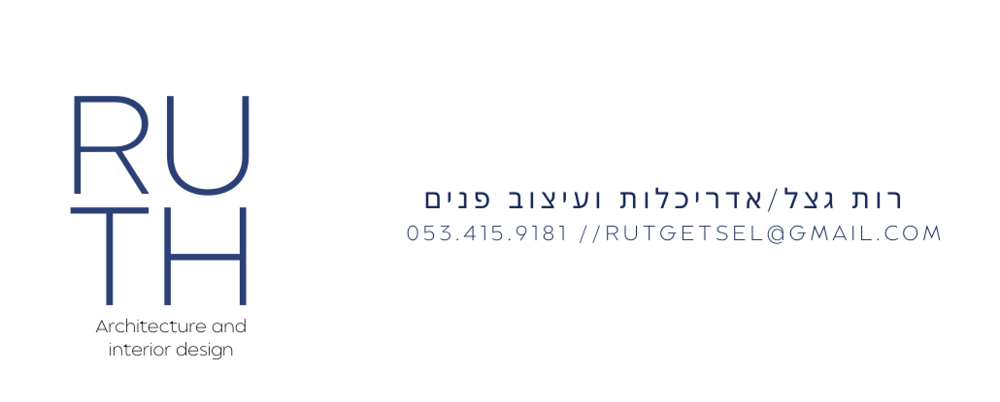

תיק עבודות
.png)
מטבחים וחללי פנים
.png)
פרויקט גמר | פנימייה

מוסדות חינוך

חיבור שלי לעולם האדריכלות והעיצוב הוא הרבה מעבר למקצוע – הוא ממש חלק מהדנ"א שלי. מאז ומתמיד אני חיה ונושמת תכנון, וכשסיימתי את לימודי כהנדסאית אדריכלות והגשתי את פרויקט הגמר שלי, שזכה להצלחה רבה ולשבחים, היה לי ברור שזה המקום שבו אני רוצה להשקיע את כל המרץ והיצירתיות שלי.
הראש התכנוני שלי תמיד עובד קדימה, מחפש את הפתרון המדויק והנכון ביותר לכל חלל, תוך הקפדה על יסודיות ודייקנות ללא פשרות. לצד הכלים המקצועיים שרכשתי בלימודים, אני מביאה איתי ערך מוסף של ניסיון של 7 שנים כצלמת. השנים האלו מאחורי העדשה העניקו לי יכולות בין-אישיות גבוהות ועמידה בלוחות זמנים צפופים, ואני יודעת בדיוק איך להתנהל במצבי לחץ מתוך ניסיון אמיתי בשטח ומול לקוחות.
אני מגיעה עם רצון ענק להתקדם ו"לעוף" קדימה, ואני מחפשת את המקום שבו אוכל להביא לידי ביטוי את המעוף התכנוני שלי, את השליטה המקצועית בתוכנות ובסטנדרטים התכנוניים, יחד עם המוסר המקצועי הגבוה שמוביל אותי בכל פרויקט.
"היכולת של רות לקרוא את הצרכים שלנו ולתרגם אותם לתכנון מדויק הייתה מדהימה."
– משפחת כהן"סדר וארגון מופתי, יחד עם עין עיצובית של צלמת. התוצאה פשוט מושלמת."
– א. שוורץ